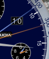
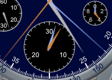
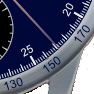

Olympia

The white hands are ordinary hour and minute hands showing the current time. The subdial at 9 o'clock shows the seconds. The other 3 subdials and the colored hands implement the chronograph functions: the long and thin center hand(s) indicate elapsed seconds; the subdial at 6 o'clock shows elapsed minutes (up to 30); the large hand(s) on the subdial at 12 o'clock show elapsed hours (in 1/2 hr increments up to 12), and the thin one(s) show elapsed days (in 1/2 day increments); the small subdial at 2 o'clock shows elapsed 1/10ths (the horology buzzword for this is foudroyante).
Each of the stopwatch hands actually consists of a pair of hands, one orange and one blue. The orange hands show the running elapsed time; the blue rattrapante hands normally follow exactly beneath the orange ones but can be frozen to show a split time.
The elapsed days hand(s) are underneath the elapsed hours hand(s) so they're invisible until the stopwatch has been running for a half-hour or so.
There are three pushers: Start/Stop is at 2 o'clock; Reset is at 4 o'clock; Rattrapante is at 10 o'clock. Start/Stop and Reset are always available; Rattrapante is available only when the stopwatch is running.
To time an event simply press the Start/Stop button at the beginning and ending of the event.
If the stopwatch is stopped, pressing Start again without first pressing Reset simply continues. If you press Reset while the stopwatch is running, the time will restart from zero immediately; you can use this "flyback" feature to restart a timing event with a single press.
 The first press of the Rattrapante button freezes the rattrapante hands (blue) while the main hands (orange) continue. A second press makes the rattrapante hands catch up to the main hands and then continue. In the first example, the rattrapante was stopped at 9.1 seconds then the main stopwatch was stopped at 12.2.  In the second example, the rattrapante was stopped at 1 minute 22 seconds then the main stopwatch was stopped at 2 minutes 36.4 seconds.
The marks on the case allow Olympia to be used as a

tachymeter (not "tachometer" ).
Whenever you time an interval less than 60 seconds the stopwatch second hand points to the length of the interval when read against the main dial
and it also indicates the value "3600/interval" on the tachymeter dial.
For example, if you time how long it takes to go exactly one mile (23 seconds in this example) then the tachymeter will indicate your speed in miles per hour (157).
The windows at 3 o'clock show day of the week and the date.
It is not possible to adjust the main time on this watch.
You can time long intervals (up to 12 days) even while Emerald Chronometer is not running. Simply start the stopwatch and quit. When you run Emerald Chronometer again the stopwatch will still be timing from its original start point.
If you time an interval longer than 12 days Olympia's hands will simply wrap around and continue. So if you can time even longer intervals if you have some other way of knowing the number of 12 day periods.